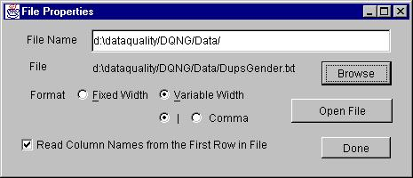
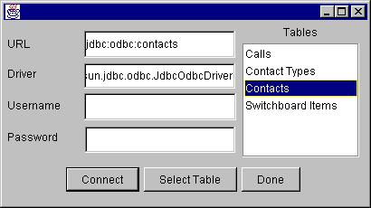

Source
The Source block is used to access data from an input file or a database
table. It has one output but no input and is usually used in the beginning
of a flow diagram. The user may select one of the following types as a
Source.
Sequential File / Random File
Either a Sequential or random file is used in the flow diagram depending
on the input type of the next block.
Properties
-
Enter the name of the file to be open. Browse helps in selecting
the file.
-
Select the format of the file, fixed width column or variable width column.
In variable width column, also select the delimiter used for the separation
of columns.
-
The names of columns are always read from the very first line in the input
file. In fixed width format, please make sure that the name of the column
is a single word.
-
Click on Open File button to open the file.
Press Done when done.

DataBase
Supports sequential access.
Properties
-
Enter URL, Driver, Username and Password for
the database.
-
Click on Connect to connect to the database. When connected,
all its tables will appear in the list on the right.
-
Select a table from the list and click on the Select Table
button.
Done

.